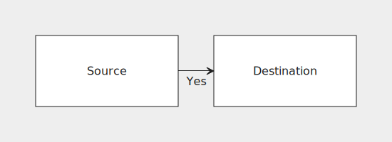
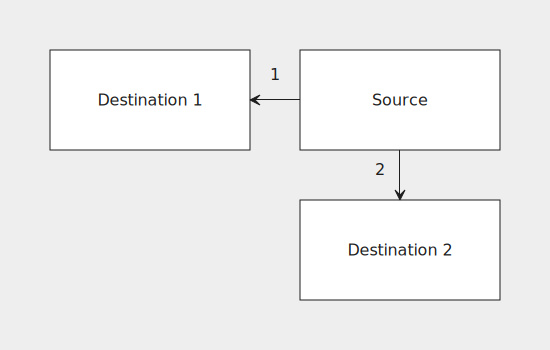

Making connections
Absolute connections
Here's a flowchart with two connected nodes:
grid {
block("Source", connect: s:n#dest);
block#dest("Destination");
}

We've attached #dest to the destination node's identifier. This is called a label. Two nodes cannot have the same label. The connection itself is represented with a connect attribute on the source node. The connection declaration above can be split into two parts: s:n and #dest.
s:nmeans that we'd like to connect the south side of the source node to the north side of the destination node.#destis the destination. Here it means that the destination node is the one with the labeldest.
Relative connections
Having to keep track of various labels can get messy fast. We could simplify the previous example like so:
grid {
block("Source", connect: s:n@s);
block("Destination");
}
Instead of a label on the destination node we used @s as the connection destination, meaning "the node directly south of me". Relative connections are easier to understand and don't require labels, but can't represent all possible connections like absolute ones can.
Self connection
A node can be connected to itself like so:
grid {
block("Source and destination", connect: s:n@);
}

Connection attributes
Certain attributes can be set on connections just like on nodes. Here's an example:
grid {
block("Source", connect: e:w@e("Yes")), block("Destination");
}

Multiple connections
A node may also define multiple connections like so:
grid {
block("Destination 1"), block("Source", connect: { w:e@w("1"); s:n@s("2") });
_, block("Destination 2");
}
